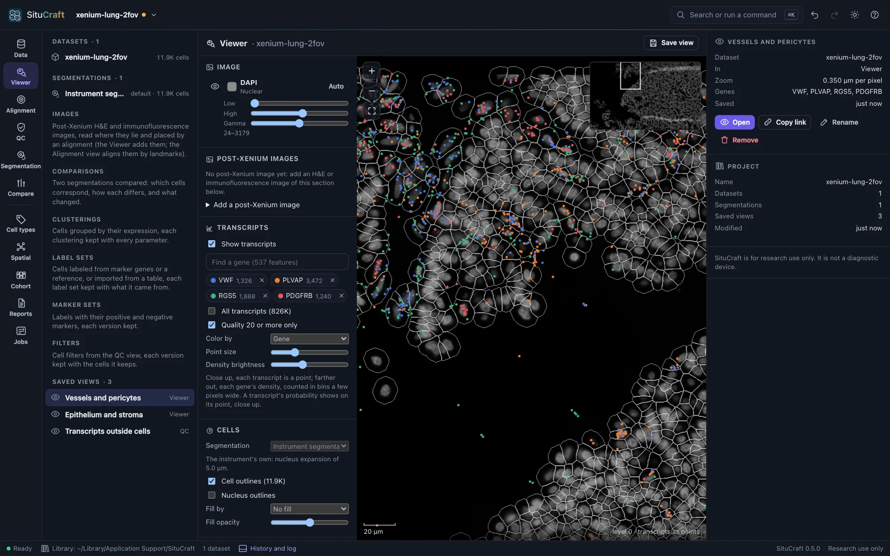
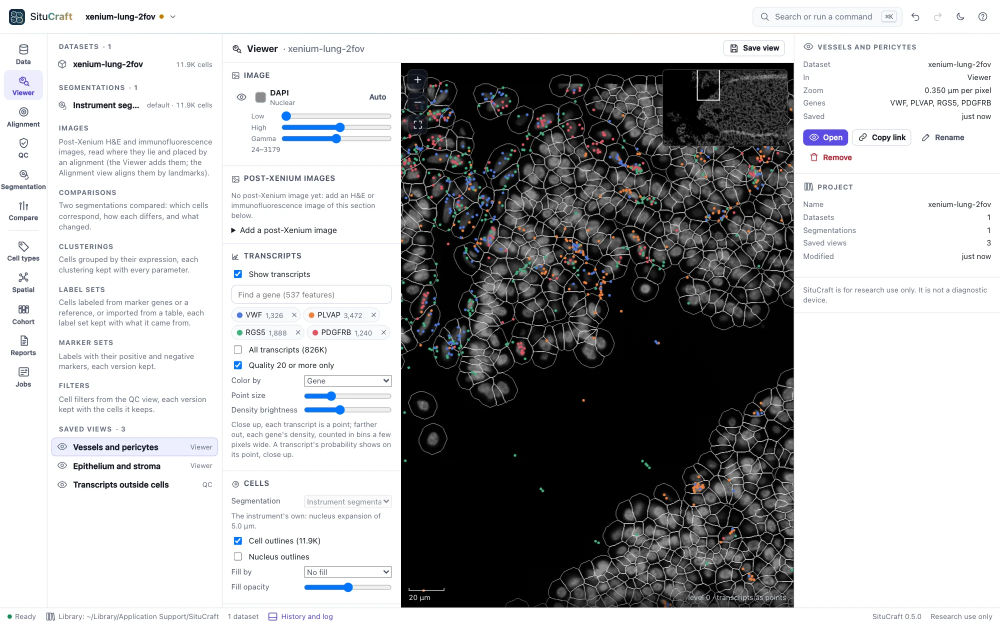
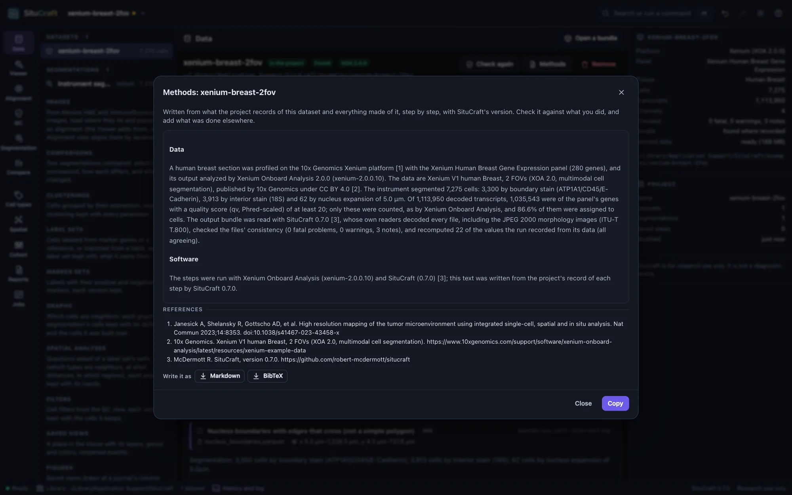
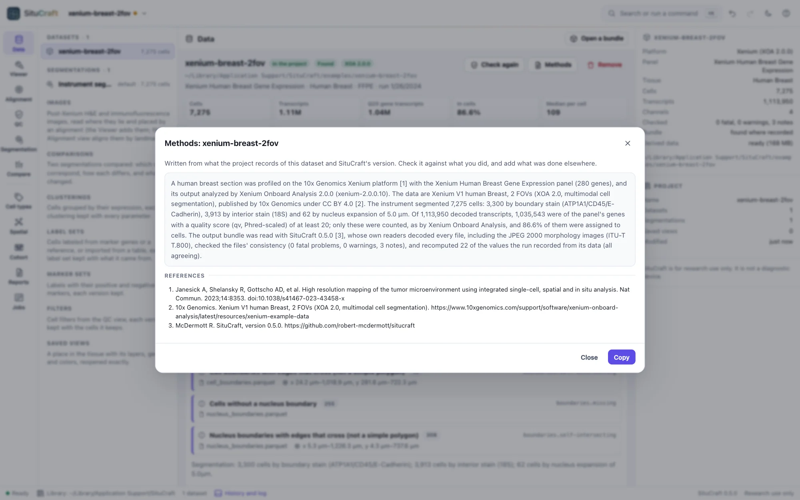

The record
Everything you do is kept: projects save themselves with their history, every result is an artifact with its lineage and the SHA-256 of its files, and decisions and reviews are appended, never removed. The methods paragraph and project archives take the record elsewhere.
Projects
Projects save themselves to the library as you work; the start page and the project menu (the project's name, top left) reopen them. Undo and Redo (⌘Z, ⇧⌘Z) cover every change, and the drawer (⌘J) shows the project's history and the session's log.
A bundle that moved: reopening a project finds each bundle where it was recorded. If it is gone, Locate… in the Data view points to its new place, once SituCraft has checked it is the same run.


Artifacts and their lineage
Each result is an artifact of the project: a segmentation, a comparison, a clustering and its map, a label set, a graph, an analysis, an export. Each is kept with what it was made from (its lineage), the method's version, every parameter and seed, and the SHA-256 of its files, so the same inputs and settings give the same result on any computer, and asking again answers the one already made. Decisions (a segmentation promoted, kept or rejected), reviews and the versions of filters, names, marker sets, regions and alignments are appended to the project with who made them, when and why, and never removed: taking one back is another. Formats describes every file SituCraft reads and writes.
The methods paragraph


Methods in the Data view writes a paragraph for the dataset from what the project records: the platform, panel and software, the segmentation, the transcripts counted, how SituCraft checked the bundle (with its version and commit), the filters you choose, and the data's source, with references. Copy puts it on the clipboard; read it against what you did and add what was done elsewhere.
Project archives
Project archive (.scz)… in the project menu writes the project (datasets, filters, saved views, history) to a file you name. It does not contain the bundles: it records each one relative to the archive, so a folder holding the archive and its bundles can be moved, copied or shared, and opened with situcraft project.scz or Open a bundle.
Where things are kept
| What | Where (macOS; Linux; Windows) | Flag |
|---|---|---|
| Projects | ~/Library/Application Support/SituCraft; ~/.config/SituCraft; %AppData%\SituCraft | --data-dir |
| Example datasets | the examples folder of the above | --examples-dir |
| Derived data (can be deleted) | ~/Library/Caches/situcraft; ~/.cache/situcraft; %LocalAppData%\situcraft | --cache-dir, --cache-limit |
SituCraft listens only on this computer (127.0.0.1) and sends nothing anywhere. Its only request to the internet is an example's download, when you ask for it.